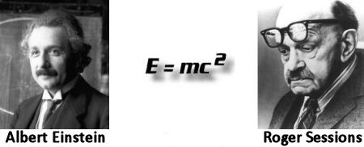

Albert Einstein? Louis Zukofsky? Roger Sessions? William of Ockham? Anonymous?
Dear Quote Investigator: The credibility of a quotation is increased substantially if it can be ascribed to a widely-recognized genius such as Albert Einstein. Hence a large number of spurious quotes are attributed to him. I would like to know if the following is a real Einstein quote or if it is apocryphal:
{kind=link}
Everything should be made as simple as possible, but not simpler.
I like this saying because it compactly articulates the principle of Occam’s razor.
Quote Investigator: The reference work “The Ultimate Quotable Einstein” published in 2010 is the most comprehensive source for reliable information about the sayings of Albert Einstein, and it states [UQUE]:
This quotation prompts the most queries; it appeared in Reader’s Digest in July 1977, with no documentation.
The earliest known appearance of the aphorism was located by poet and scholar Mark Scroggins and later independently by top-flight quotation researcher Ken Hirsch. The New York Times published an article by the composer Roger Sessions on January 8, 1950 titled “How a ‘Difficult’ Composer Gets That Way”, and it included a version of the saying attributed to Einstein [AERS]:
I also remember a remark of Albert Einstein, which certainly applies to music. He said, in effect, that everything should be as simple as it can be but not simpler!
Since Sessions used the locution “in effect” he was signaling the possibility that he was paraphrasing Einstein and not presenting his exact words. Indeed, Einstein did express a similar idea using different words as shown by the 1933 citation given further below.
In June of 1950 the maxim appeared in the journal Poetry in a book review written by the prominent modernist poet Louis Zukofsky. The saying was credited to Einstein and placed inside quotation marks by Zukofsky [EPLZ].
There is also the other side of the coin minted by Einstein: “Everything should be as simple as it can be, but not simpler” – a scientist’s defense of art and knowledge – of lightness, completeness and accuracy.
The wording used by Sessions and Zukofsky is the same, and it differs somewhat from the most common modern version of the quote. Professor Mark Scroggins who has specialist knowledge of Zukofsky believes that the poet probably acquired the aphorism by reading the article by Sessions. Zukofsky also incorporated the saying in section A-12 of his massive poem titled “A”.
Here are additional selected citations in chronological order starting in 1933.
Alice Calaprice the editor of “The Ultimate Quotable Einstein” presented the following 1933 precursor quotation and comment in her reference work [UQUE]:
It can scarcely be denied that the supreme goal of all theory is to make the irreducible basic elements as simple and as few as possible without having to surrender the adequate representation of a single datum of experience.
From “On the Method of Theoretical Physics,” the Herbert Spencer Lecture, Oxford, June 10, 1933. This is the Oxford University’ Press version. The words “simple,” “simplest,” and “simplicity” recur throughout the lecture. The version reprinted in 1954 in Ideas and Opinions, 272, is a bit different. This sentence may be the origin of the much-quoted sentence that “everything should be as simple as possible, but not simpler,” and its variants.
QI thinks that the existence of this quotation supports the plausibility of the hypothesis that Roger Sessions did read or hear something from Albert Einstein that catalyzed the dissemination of the maxim.
In January 1950 composer Sessions used the words “everything should be as simple as it can be, but not simpler” and stated that Einstein communicated this phrase “in effect” [AERS].
In June of 1950 Louis Zukofsky used the aphorism in the journal Poetry as discussed above [EPLZ]. That year he also placed it in one of his poems. The table of contents of the 1978 edition of the poem “A” says that section A-12 was composed in 1950 and 1951 [EALZ]:
Had he asked me to say Kadish
I believe I would have said it for him.
How fathom his will
Who had taught himself to be simple.
Everything should be as simple as it can be,
Says Einstein,
But not simpler.
In 1962 Time magazine printed a version of the quotation credited to Einstein in “A Letter From The Publisher.” The phrasing used is still distinct from the common modern version [AETM]:
In fields of specialized knowledge, we aim to render an account that is plain and simple, yet does no violence to the difficulty of the subject, so that the uninformed reader can understand us while the expert cannot fault us. We try to keep in mind a saying attributed to Einstein—that everything must be made as simple as possible, but not one bit simpler.
In 1963 a reader sent a letter to the “Queries and Answers” section of the New York Times attempting to gain information about the quotation. The reader specified no attribution [AENY]:
F.H.V. wants help in locating a quotation which he remembers as: “Everything must be made as simple as possible, but no simpler.”
In 1964 the syndicated newspaper columnist Sydney J. Harris used a version of the saying without giving an attribution. [ASJH]:
In every field of inquiry, it is true that all things should be made as simple as possible – but no simpler. (And for every problem that is muddled by over-complexity, a dozen are muddled by over-simplifying.)
In 1972 the maxim appeared as the solution to a word puzzle in the syndicated feature called Daily Cryptoquote [AESA]. The Yale Book of Quotations also lists a 1972 instance of this newspaper column [AEYQ]:
EVERYTHING SHOULD BE MADE AS SIMPLE AS POSSIBLE, BUT NOT SIMPLER—ALBERT EINSTEIN
The 1981 edition of “Prepositions: the Collected Critical Essays of Louis Zukofsky” contained a version of the essay that appeared in the journal Poetry in 1950. The text was labeled with the date 1948 by Zukofsky, but careful examination of the text and other documents in the time period by Mark Scroggins indicates that the date is inaccurate. Scroggins believes the essay was created at a later date by condensing the article from the Poetry journal. Thanks to top-notch researcher Victor Steinbok for pointing out the date in “Prepositions” [AEPZ].
In conclusion, Einstein may have crafted this aphorism, but there is no direct evidence in his writings. He did express a similar idea in a lecture but not concisely. Roger Sessions was a key figure in the propagation of the saying. In fact, he may have crafted it when he attempted to paraphrase an idea imparted by Einstein.
Louis Zukofsky also helped to disseminate the phrase, but it is likely that he learned of the phrase through the article by Sessions in the New York Times. Importantly, Zukofsky placed quotation marks around the phrase and directly attributed the words to Einstein. QI believes that the precise wording used in the common current version evolved from the statements of Sessions and Zukofsky. Thanks for your question. I tried to keep the answer as simple as possible.
Update history: On May 13, 2011 the January 8, 1950 citation for the New York Times article by Roger Sessions was added. Scholar Mark Scroggins was credited with finding this cite, and other changes were made to reflect this important piece of new evidence. Also, on May 13, 2011 Ken Hirsch was included as an independent discoverer of the Sessions citation. This inclusion was based on an examination of the history of changes to the WikiQuote entry on Einstein, and based on personal communication with Ken Hirsch.
[UQUE] 2010, The Ultimate Quotable Einstein, Edited by Alice Calaprice, Page 475 and Page 384-385, Princeton University Press, Princeton, New Jersey. (Verified on paper)
[AERS] 1950 January 8, How a ‘Difficult’ Composer Gets That Way by Roger Sessions, Page 89, New York. (ProQuest)
[EPLZ] 1950 June, Poetry, Reviews section, Poetry in a Modern Age by Louis Zukofsky, [Review of the volume “William Carlos Williams” by Vivienne Koch (The Makers of Modern Literature Series)], Page 180, Volume 76, Number 3, Modern Poetry Association. (Google Books snippet view. Verified on paper) link
[EALZ] 1978, A by Louis Zukofsky, Page 143, University of California Press, Berkeley, California. (Verified on paper)
[AETM] 1962 December 14, Time magazine, A Letter From The Publisher, Time, Inc., New York. (Online Time magazine archive; Accessed 2011 May 12) link
[AENY] 1963 December 8, New York Times, Queries and Answers, Page 457, New York. (ProQuest)
[ASJH] 1964 January 9, New Castle News, Strictly Personal by Sydney J. Harris. Page 4, New Castle, Pennsylvania. (NewspaperArchive)
[AESA] 1972 June 21, Daily Sitka Sentinel, Solution for Yesterday’s Cryptoquote, Page 2, Sitka, Alaska. (NewspaperArchive)
[AEYQ] 2006, The Yale Book of Quotations by Fred R. Shapiro, Section: Albert Einstein, Page 231, Yale University Press, New Haven. (Verified on paper)
[AEPZ] 1981, Prepositions: the Collected Critical Essays of Louis Zukofsky (Expanded Edition), Page 50-51, University of California Press. Berkeley. (Google Books limited view) link
My own research on Zukofsky’s “A” indicates that Zukofsky probably got the Einstein “quotation” from a 1950 *New York Times* article by the composer Roger Sessions, “How a ‘Difficult’ Composer Gets That Way,” in which Sessions writes: “I remember a remark of Albert Einstein, which certainly applies to music. He said, in effect, that everything should be as simple as it can be, but not simpler.” The only handy citation: link
Mark Scroggins: Thank you very much for visiting the Quote Investigator blog and posting a wonderfully insightful comment. Your expertise and helpfulness is deeply appreciated. I have rewritten the article to reflect the information you provided.
I am still bewildered: how can anyone believe that “simpler than as simple as possible” makes any sense ? “As simple as possible” means that there is nothing simpler than this since simpler than ‘as simple as possible’ is simply impossible.
regards from Jerusalem – Barbara
Hello Barbara,
In a mathematical sense, simplification is used to take a complex expression to make it more easily read and understood (and indeed remembered). This process maintains all the complexity of the initial statement but in a simplified, more manageable state. But to make simpler is to sacrifice that complexity and results in an expression that is now compromised, something has been ‘lost in translation’ and along with it the validity of the expression. I hope that makes sense.
I found the Einstein’s phrase in a book and, because its meaning was ambiguous to me, searched the web and arrived at this page.
My understanding now is: Make everything as simple as possible. Not just simpler. Namely I think Einstein believed in the beauty of simplicity, utmost simplicity and hated intermediate simplicity.
Am I too simple?
Everything should be made as simple as it is possible to make it without losing its essential functionality. For example the fraction 20/60 can be simplified to 2/6, or further simplified to 1/3 without losing its meaning, and this should be done… but it cannot be further “simplified” to 13.
Being “simpler” may relate to the root of the other meaning of SIMPLE.
Webster’s 1913 Dictionary: Simpler: Weak in intellect; not wise or sagacious; of but moderate understanding or attainments;
By being simpler, we not only “sacrifice that complexity” as Amanda says but are weaken intellectually.
I am applying this to the current debate on global warming. One groups says it is man-made, the other the opposite. Is that an example of each being simpler?
Just like for the Murphy’s law, there are variants, lemmas and further derivatives, I like the following:
“Everything should be made as simple as possible, but not too simple”
Perhaps someone else may agree.
Wow, this is meta. I love it!
So Sessions attempt to make Einstein’s original phrase of:
“It can scarcely be denied that the supreme goal of all theory is to make the irreducible basic elements as simple and as few as possible without having to surrender the adequate representation of a single datum of experience.”
as simple as possible but no simpler resulted in the maxim:
“Everything Should Be Made as Simple as Possible, But Not Simpler”.
Yes? No?
This means things to be made simple so as to be understood but no further simplified,if done loses its meaning.
I’ve always loved that quote. For me, it means that you should seek the simplest theory that matches the observations. For example, the simplest cosmological theory is that nothing exists. But that doesn’t seem to match the data very well. A much more complicated cosmological theory is that everything was created and is controlled by sentient, willful deities. That matches the data perfectly, because you can always attribute whatever you observe to the whim of some deity. The quote under discussion suggests that there’s some sweet spot between those extremes, and that’s what scientists and other thinkers should seek.
The Einstein quote does NOT mean “make it simple enough to understand,” as Dodd suggested above. Einstein spoke and wrote more than once about simplification. More to the point, he was decidedly AGAINST simplifying to the point that laypersons might understand (in effect, if it were simple enough to understand, it wouldn’t be a discovery worth lauding).
What he’s discussing in the quote is the scientific premise of parsimony (sometimes called Occam’s razor) – given two equally accurate answers, science prefers the simpler. The rub, of course, is the meaning of “equally accurate” and of “simpler.” Einstein quote actually puts him on the more complex side, as he asserts any satisfactory explanation, as he included “without having to surrender the adequate representation of a single datum.”